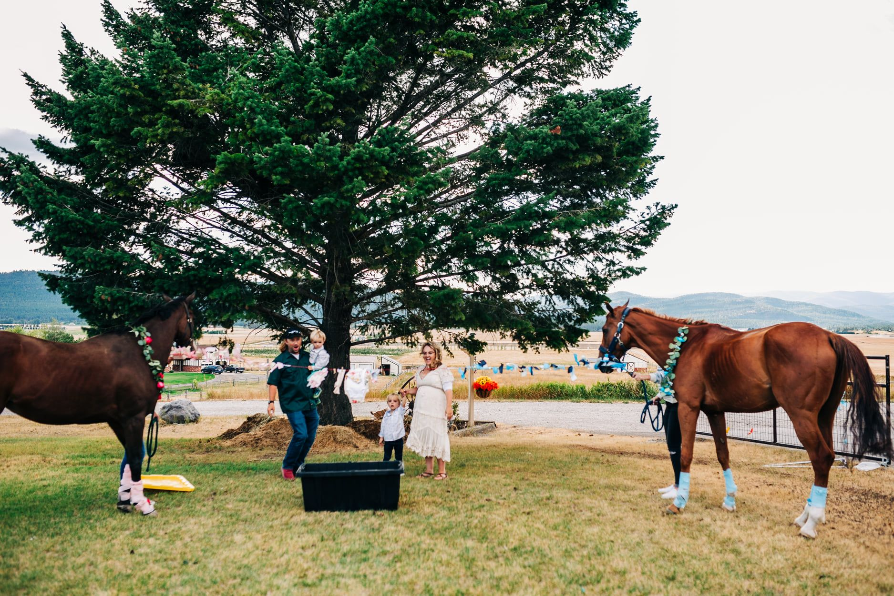
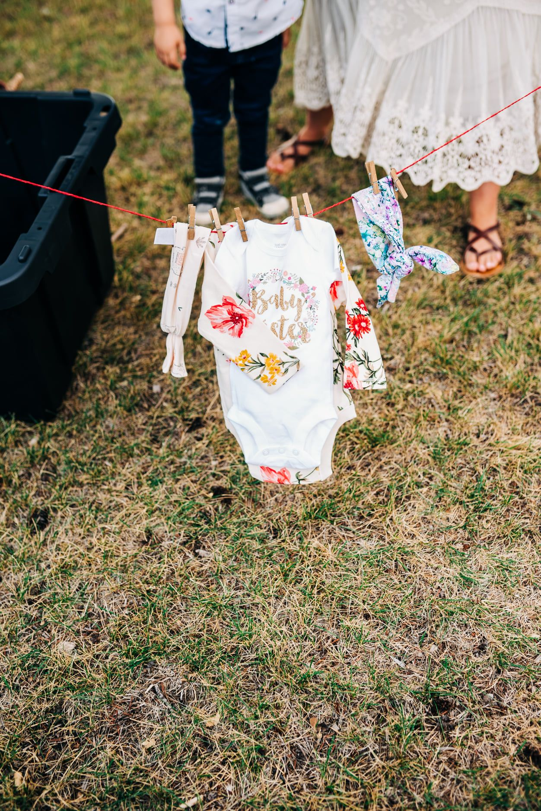
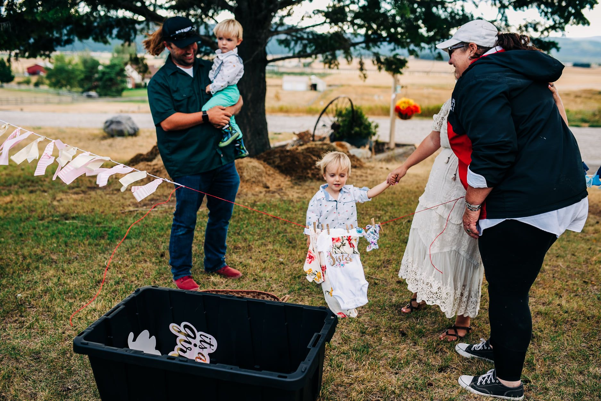
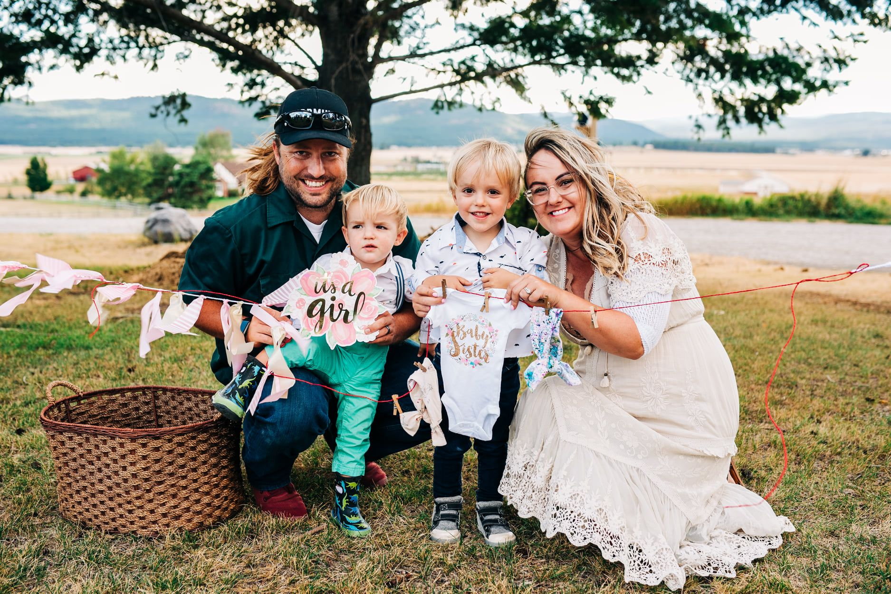
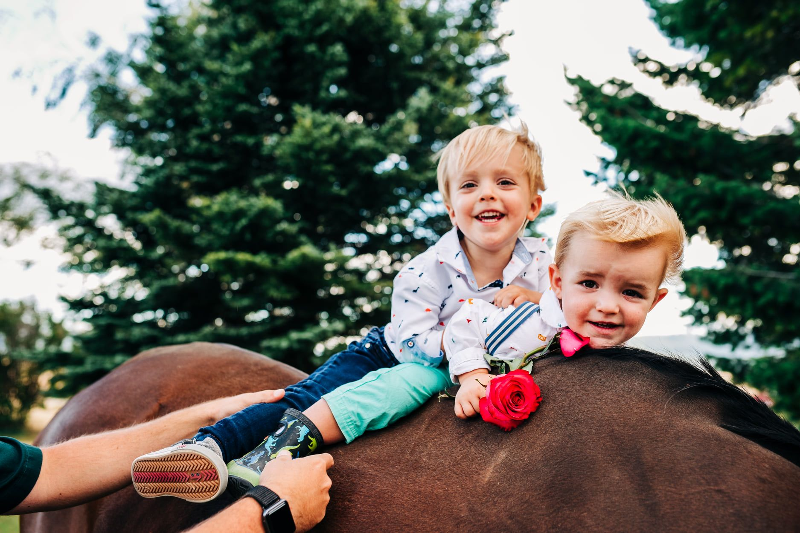
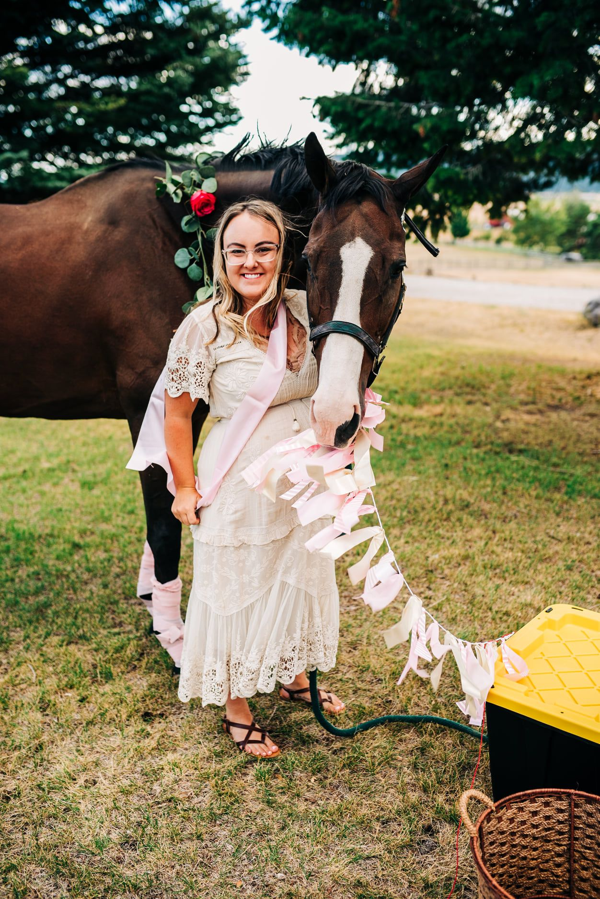
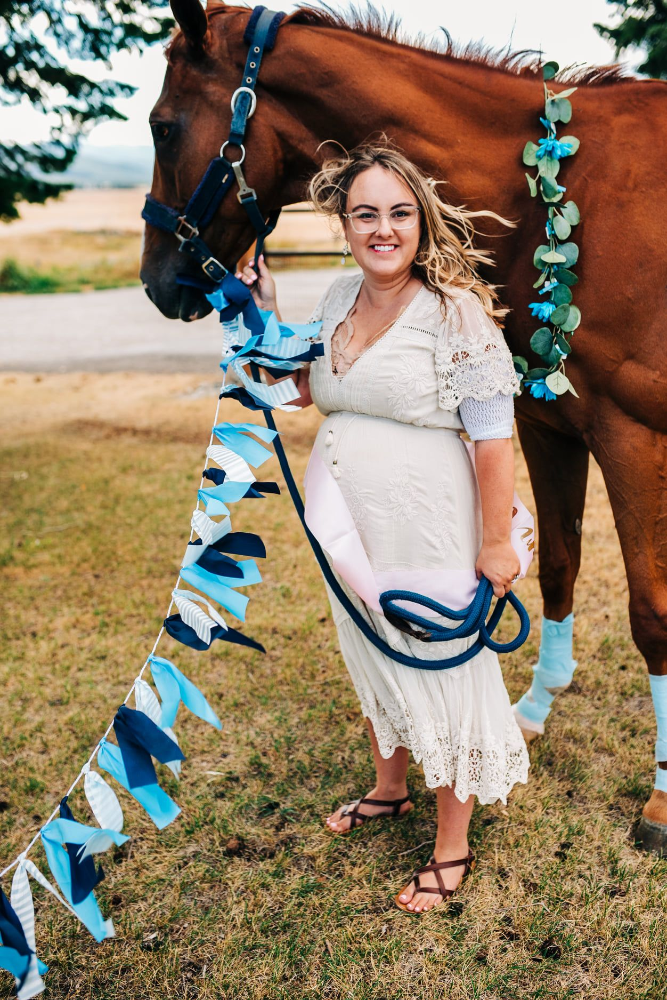
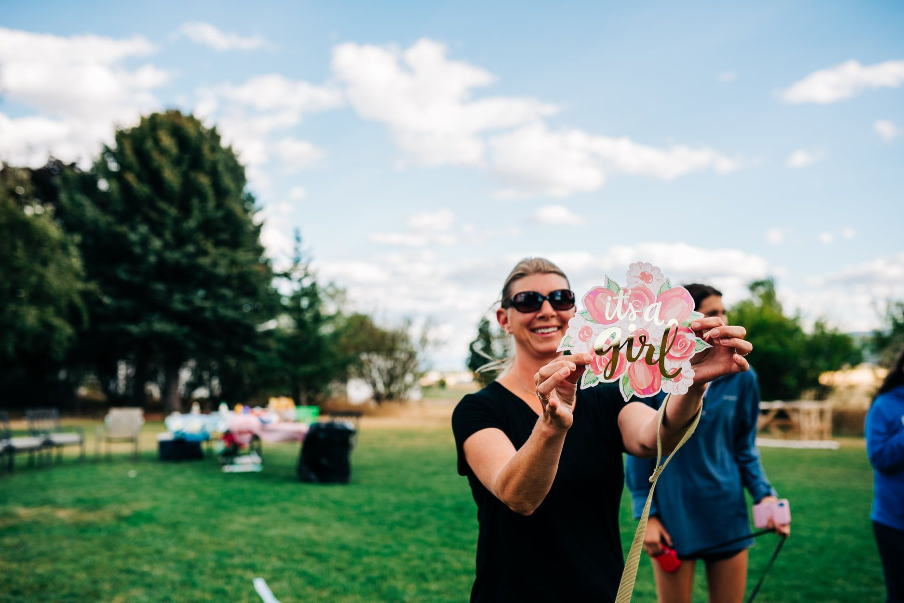

Baby Rogness is a GIRL!
We didn't find out what we were having with our boys but with how hard this pregnancy has been, I needed something to look forward to.
Braden has always been anti-gender reveal party, because, you know the ones that go horribly wrong and almost burn down California?) but I couldn't resist doing one with HORSES!
After a rough 30 weeks battling Hyperemesis/Gestational Diabetes, I also needed something to CELEBRATE!
It was a good thing this party was scheduled when it was because I had gotten a terrible chemical burn from chlorhexidine which I had just developed an allergy too. It caused such a terrible reaction, my arm will be forever scared. A reminder of the battle it took to meet my treasure of a girl.
And the wind was INSANE--so shout out to Joan Romo and her calm and lovely horses that our family gets the honor of growing up around.







